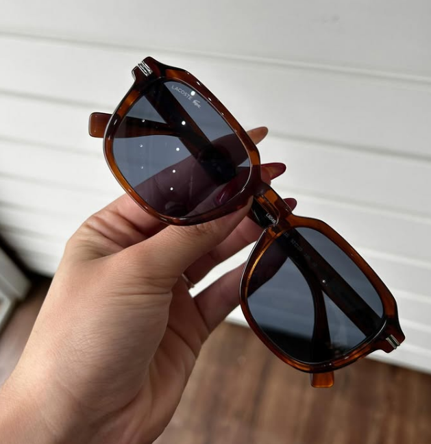

ESSENCIAL
Aura
Acetato tartaruga · Óculos de grau
Cor / variante:
PRECISÃO DIANTE DOS SEUS OLHOS
Há mais de 8 anos, a Óticas Gaffa ajuda você a encontrar conforto, estilo e qualidade para a sua visão.
Atendimento próximo.
Preço justo e variedade.
Nota 5,0 no Google
Diversidade de modelos
Preço justo e atendimento próximo
MUITAS FORMAS DE SER VOCÊ
Do primeiro café ao último raio de sol.
Um modelo para cada versão sua.
Acetato tartaruga · Óculos de grau

Modelo solar com presença marcante e estilo atemporal.

Tartaruga com detalhe · Óculos de grau

UM OLHAR PARA CADA MOMENTO
Encontre uma armação que acompanhe seu estilo todos os dias — com conforto, personalidade e a precisão que a sua visão merece.
Ver todos os modelosModelos para inspirar seu próximo olhar. 3 modelos
 A BELEZA ESTÁ NO SEU OLHAR.
A BELEZA ESTÁ NO SEU OLHAR.PRAZER, SOMOS A GAFFA
Na Gaffa, você encontra uma loja confortável, equipe atenciosa e opções para todos os estilos e bolsos. Aqui, você escolhe com calma e sai enxergando novas possibilidades.
Conheça os modelos pelo WhatsAppÓCULOS QUE COMBINAM COM VOCÊ
Inspire-se em quem já encontrou
seu novo olhar na Gaffa.


UM CLÁSSICO QUE CONTINUA ATUAL
Essa armação existe desde 1920 e até hoje nenhuma tendência conseguiu tirar ela de cena.
Sabe por quê? Porque ela é uma peça atemporal — combina com diferentes estilos, ilumina o rosto e continua fazendo sentido em qualquer época.
Conheça as armações tartaruga
CADA DETALHE CONTA
Sua rotina, suas referências e o que faz você se sentir bem. O ponto de partida é sempre você.
Formatos, materiais e proporções. Explore as armações com calma e descubra a sua favorita.
Orientações para conservar seus óculos e atenção aos detalhes que fazem diferença no uso diário.
QUEM JÁ ESCOLHEU A GAFFA
“Ótica top com muitas variedades
e bons atendentes.”
★★★★★“Melhor ótica que já entrei. Fui bem recebido e me senti confortável. Os preços acessíveis e o produto, muito confortável.”
Davi Marques · cliente Gaffa
★★★★★“Ótimo atendimento com atendentes educados e prestativos. Se você busca uma ótica de confiança, a Gaffa é o nome certo.”
Lucas Nathan Oliveira · cliente Gaffa
★★★★★“Atendimento incrível! Fui muito bem atendida, com atenção, educação e muita dedicação.”
Júlia Alves Ferreira · cliente Gaffa
VEM CONHECER A GAFFA
Rua Oratório, 684 — Bangu, Santo André · Seg. a sex. 9h–18h · Sáb. 9h–14h
UM POUCO MAIS DE CLAREZA
Considere o conforto no nariz e nas orelhas, a largura da armação e seu gosto pessoal. Experimentar diferentes formatos ajuda a perceber qual combina com você.
Esta é uma landing page demonstrativa. A Ótica Lume, a coleção e seus serviços são fictícios; não há venda ou reserva de produtos.
Os botões abrem uma apresentação dos modelos. Nenhum dado é enviado e nenhum agendamento real é realizado.